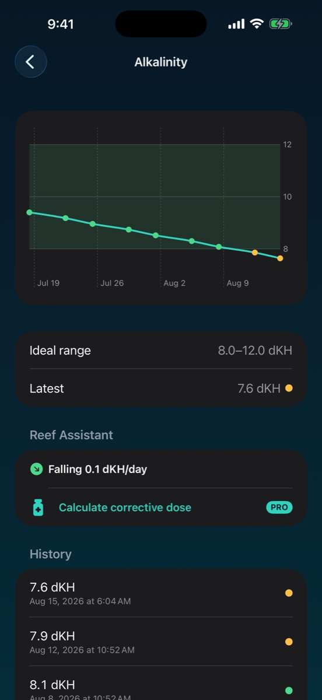
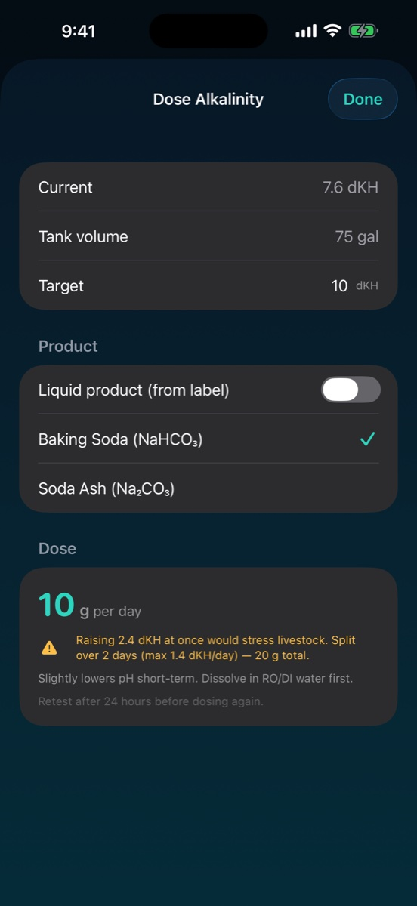

History charts put readings in context, with reference ranges and drift detection to help you notice changes over time.
03 / KEEP GOING
Make testing a routine.
Set test reminders and keep your records close. Logging works offline, with no sign-up and no separate hardware required.
MORE CONTEXT. MORE CONFIDENCE.
Follow the changes. Keep the bigger picture.
Charts help you review where a parameter has been. Dosing calculations and water change planning are planned for Pro, which is not yet available.
Calculations are a reference, not a substitute for testing or product instructions. Confirm tank volume and units, check the product label, and retest before dosing again.

History & trends Free includes 30 days

Corrective dosing Pro preview · Not yet available
START WITH YOUR FIRST TANK
Useful for free. Pro is not available yet.
Start logging without a subscription. Pro upgrades are not currently available.
On your device. ReefVitals has no user accounts or external database for your tank data. Read the privacy policy for details.
Do I need connected aquarium equipment?
No. ReefVitals is a manual water test log. Enter readings from your own test kits; it is not an automatic water-testing device or aquarium controller.
Can I upgrade to Pro?
Not yet. Pro subscriptions are not currently available. Planned Pro features include corrective dosing, the water change planner, unlimited tanks, and full stored history. No availability date has been announced.
What can I use for free?
The free app includes one tank, all ten water parameters, batch logging, charts with 30 days of history, test reminders, and drift detection. No subscription or account is needed to start logging.
What should I know about the planned dosing tools?
Treat calculated doses as a reference. Confirm your tank volume, units, test results, and product instructions. Large corrections may be split across days. Always retest before dosing again.